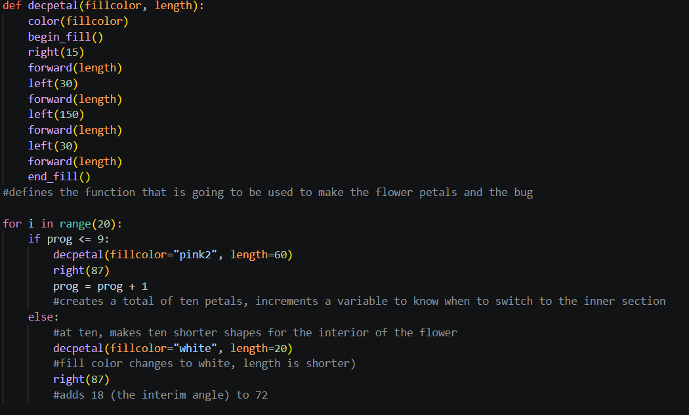

The goal of this project was to draw a scene using the Turtle vector graphics tools - in this case, a lily in a body of water with a bug.

The above "decpetal" function is used extensively throughout to create the petals and the bug. The for i in range(20) handles the flower - it first increments up to 10 larger petals, then changes sizes for the other 10 petals to create the inner section.